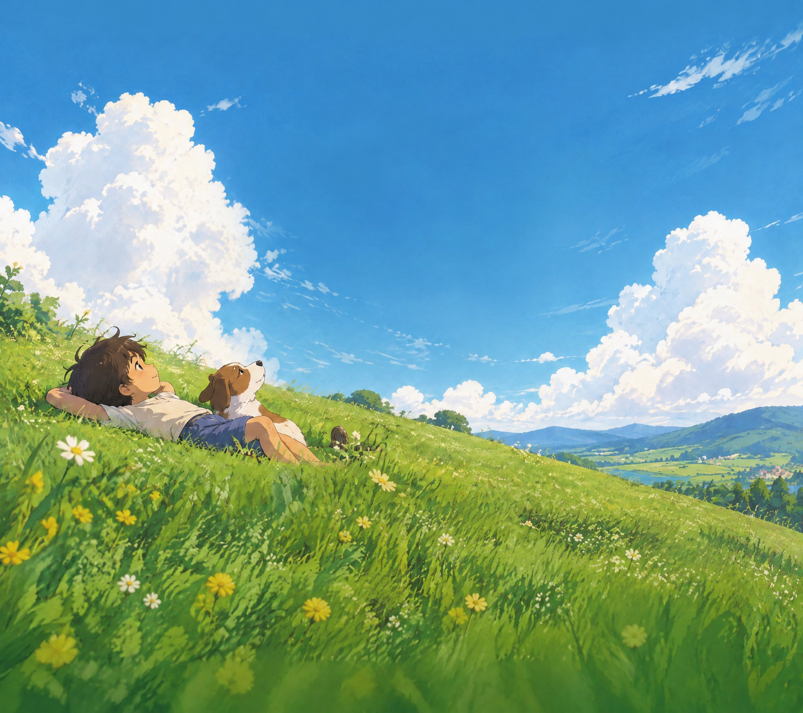

Meadowbell
第一章 · 让溪水回来
HOLLYOAK'S PLUCKY SPROUT SQUAD
小芽小队
风铃谷
沿着有风的小路，和豆丁一起
种下希望，让山谷重新生长。
一起出发
继续上次的冒险
↗
探索 · 种植 · 伙伴 · 小小的奇迹
一个可以慢慢长大的世界
声音关闭
Meadowbell
小芽小队 · 风铃谷
第 1 天
清晨
THE COTTAGE GARDEN
小小菜园
山谷手记
0 / 6
让溪水回来
先种下第一颗种子。
探索
1
浇水
2
种植
3
豆丁
空格
日记
J
休息
R
点击地面行走
·
点击标记互动
·
按 E 与附近物体互动
已保存
沿着小路走一会儿…
×
MEADOWBELL
风铃谷的小小冒险
×
汪！
风吹过，新的故事长出来
第 2 天